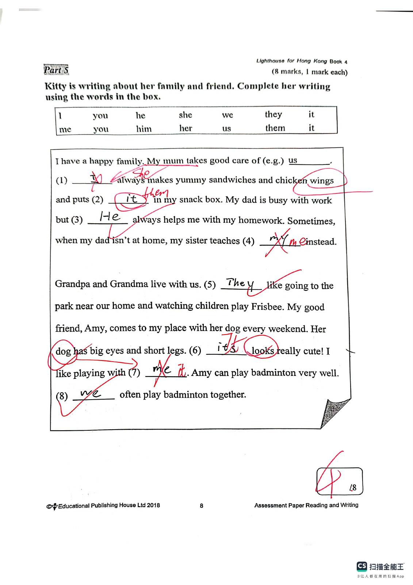
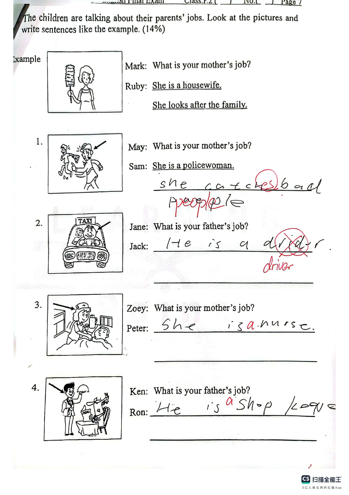

Answer: straight lines; parallel lines; perpendicular lines
已掌握
| # | 单词/词组 | 中文意思 | 例句/说明 | 已掌握 |
|---|---|---|---|---|
| noun 名词 | ||||
| 1 | postcard | 明信片 | I sent a postcard to my friend. | |
| 2 | rule | 规则 | We should follow the rules. | |
| 3 | uniform | 制服 | He wears a school uniform. | |
| 4 | nurse | 护士 | The nurse helps patients. | |
| 5 | music | 音乐 | We listen to music after school. | |
| 6 | train | 火车；训练 | We travelled to the city by train. | |
| 7 | Monday | 周一 | I have an English lesson on Monday. | |
| 8 | dinner | 晚饭 | We eat dinner at home. | |
| 9 | air | 空气 | We need air to breathe. | |
| 10 | poem | 诗歌 | Read the poem. | |
| verb 动词 | ||||
| 11 | have a bath | 洗澡 | I have a bath before bed. | |
| phrase 短语 | ||||
| 12 | organize the bookshelf | 整理书架 | Let's organize the bookshelf after school. | |
| adjective 形容词 | ||||
| 13 | wet | 湿润的；湿的 | My shoes are wet from the rain. | |
| modal verb 情态动词 | ||||
| 14 | mustn't | 禁止；不准 | You mustn't run in the classroom. | |
| pronoun 代词 | ||||
| 15 | them | 它们 | I can see them in the garden. | |
| adverb 副词 | ||||
| 16 | never | 从不 | I never run across the road. | |
| 17 | seldom | 很少 | I seldom eat sweets. | |
| uncategorized 未分类 | ||||
| 18 | learn | 学习 | We learn new words every day. | |
| 19 | miss | 错过 | Hurry up, or we will miss the bus. | |
| 20 | supermarket | 超市 | We buy food at the supermarket. | |
| # | 单词/词组 | 中文意思 | 例句/说明 | 已掌握 |
|---|---|---|---|---|
| adjective 形容词 | ||||
| 1 | scared | 害怕的 | I was very scared on the first day. | |
| noun 名词 | ||||
| 2 | home | 家 | We stayed at home in the afternoon. | |
| 3 | poem | 诗 | Read the poem. | |
| 4 | packet | 包；小包 | I bought a packet of biscuits. | |
| 5 | mistake | 错误 | I made a mistake. | |
| 6 | title | 标题 | Please write a title for the story. | |
| 7 | clinic | 诊所 | The doctor works in a clinic. | |
| 8 | tutor | 家庭教师 | My tutor helps me study. | |
| 9 | chicken | 鸡肉 | There's some chicken. | |
| 10 | air conditioner | 空调 | We turn on the air conditioner when the room is very hot. | |
| 11 | carton | 纸盒；纸箱 | We bought a carton of milk. | |
| noun phrase 名词短语 | ||||
| 12 | department store | 百货商店 | We shop at the department store. | |
| 13 | a bowl | 碗 | Put the egg into a bowl. | |
| 14 | Computer Studies | 电脑科 | Gopal is good at Computer Studies. | |
| verb 动词 | ||||
| 15 | match | 匹配 | Please match each word to the correct picture. | |
| 16 | celebrate | 庆祝 | We celebrate my birthday. | |
| 17 | yawn | 打哈欠 | I yawn when I am tired. | |
| 18 | reduce | 减少 | We use both sides of the paper to reduce waste. | |
| 19 | recycle | 回收利用 | We often recycle things we do not use any more. | |
| 20 | leave | 离开 | We always turn off the lights when we leave a room. | |
| 21 | bark | （狗）吠叫 | Dogs sometimes bark at strangers. | |
| verb phrase 动词短语 | ||||
| 22 | doing puzzles | 拼图；解谜 | I like doing puzzles. | |
| 23 | go on rides | 乘坐游乐设施（如过山车） | We went on rides at the theme park. | |
| 24 | watch a film | 看电影 | We watch a film at the cinema. | |
| 25 | feed the animals | 喂动物 | I want to go to a farm because I want to feed the animals. | |
| 26 | turn off | 关掉（开关） | We always turn off the lights when we leave a room. | |
| uncategorized 未分类 | ||||
| 27 | circle | 画圈 | Please circle the correct answer. | |
| 28 | campsite | 营地 | We put up our tent at the campsite. | |
| adverb 副词 | ||||
| 29 | always | 总是 | We always turn off the lights when we leave a room. | |
| adverbial phrase 副词短语 | ||||
| 30 | per day | 每天 | Our dog goes for two walks per day. | |
| # | 单词/词组 | 中文意思 | 例句/说明 | 已掌握 |
|---|---|---|---|---|
| time/date 时间日期 | ||||
| 1 | May | 五月 | May is the fifth month. | |
| 2 | Thursday | 星期四 | Thursday is a weekday. | |
| time unit 时间单位 | ||||
| 3 | hour | 时 | An hour has 60 minutes. | |
| numbers 数字 | ||||
| 4 | four | 4 | Four is 4. | |
| 5 | eight | 8 | Eight is 8. | |
| 6 | sixteen | 16 | Sixteen is 16. | |
| 7 | thirty | 30 | Thirty is 30. | |
| 8 | fifty | 50 | Fifty is 50. | |
| 9 | sixty | 60 | Sixty is 60. | |
| 10 | hundred | 百 | One hundred is 100. | |
| solid shape 立体图形 | ||||
| 11 | triangular prism | 三棱柱 | A triangular prism has triangular faces. | |
| 12 | quadrilateral prism | 四棱柱 | A quadrilateral prism has quadrilateral faces. | |
| plane shape 平面图形 | ||||
| 13 | quadrilateral | 四边形 | A quadrilateral has four sides. | |
| 14 | Pentagon | 五边形 | A pentagon has five sides. | |
| geometry 几何 | ||||
| 15 | right angle | 直角 | A right angle is 90 degrees. | |
| # | 单词/词组 | 中文意思 | 例句/说明 | 已掌握 |
|---|---|---|---|---|
| geometry 几何 | ||||
| 1 | identical | 完全相同的 | These two triangles are identical in shape and size. | |
| 2 | dotted line | 虚线（点线） | Draw a dotted line between the two points. | |
| question word 题目词 | ||||
| 3 | calculate | 计算 | Calculate the answer. | |
| 4 | estimate | 估计 | Estimate the answer first. | |
| comparison 比较 | ||||
| 5 | more | 更多 | 8 is more than 5. | |
| 6 | fewer | 更少 | There are fewer apples in this box. | |
| 7 | most | 最多的 | Which group has the most? | |
| 8 | least | 最小的；最少的 | Which number is the least? | |
| 9 | heaviest | 最重的 | The 3 kg bag is the heaviest of the 1 kg, 2 kg and 3 kg bags. | |
| quantity 数量 | ||||
| 10 | pair | 双 | A pair means two things together. | |
| position 位置 | ||||
| 11 | behind | 后面 | The bag is behind the chair. | |
| operations calculation 运算 | ||||
| 12 | horizontal form | 横式形式 | Write it in horizontal form. | |
| teacher math vocabulary 老师数学词汇 | ||||
| 13 | each | 每个 | Each child has three pencils. | |
| currency money 货币 | ||||
| 14 | dollar | 元 | One dollar has 100 cents. | |
| 15 | cent | 分 | One cent is a small amount of money. | |
| 16 | exchange | 交换 | We exchange money at the counter. | |
| 17 | note | 纸币 | This is a five-dollar note. | |
| measurement 测量 | ||||
| 18 | centimetre | 厘米 | A centimetre is a small unit of length. | |
| 19 | length | 长度 | Find the length of the line. | |
| 20 | kilometer | 千米 | One kilometer is 1,000 meters. | |
| 21 | kilogram | 千克 | One kilogram is 1,000 grams. | |
| position order 位置和顺序 | ||||
| 22 | following | 下面的 | Answer the following questions. | |
| data charts 统计图 | ||||
| 23 | pictogram | 象形图 | Read the pictogram. | |
| geometry tool 几何工具 | ||||
| 24 | set square | 三角尺 | A set square helps us draw angles. | |
| directions tool 方向工具 | ||||
| 25 | compass | 指南针 | A compass shows directions. | |
| 句型结构 | ||||
| 26 | Angle ... is the smallest. | 角......是最小的。 | Angle B is the smallest. | |
| 27 | The lines are perpendicular to each other. | 这些线彼此垂直。 | The lines are perpendicular to each other. | |
| 28 | ... is to the west of ... | ......位于......的西侧。 | The bank is to the west of the school. | |
| plane shape 平面图形 | ||||
| 29 | upper base | 上底 | The upper base of this trapezium is 4 cm long. | |
| 30 | right-angled trapezium | 直角梯形 | A right-angled trapezium has two right angles. | |

